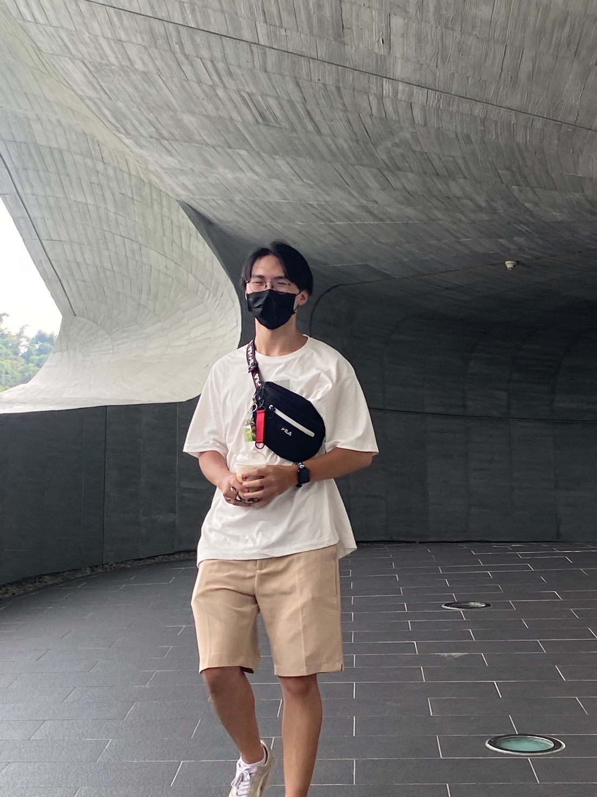

您好，我是 陳楷智
目前正就讀於 「大葉大學 資訊工程系-碩士班🎓」
非常熱愛撰寫程式、對新知識感到好奇
如果您願意給我一個展現的機會，歡迎聯絡我!
關於我
目前研究生生活，主要研究的方向是機器學習的 Ensemble Learning 健康檢測相關，現在正積極尋找研發替代役相關工作。
我是一個喜歡挑戰自我的人，樂於學習與探索新的事物，對於不同領域的知識感到興奮，並且勇於學習不同技能，以及接受各種可能性。
具備探索知識的精神，平時會讀技術論文來精進自己的實作技術觀念，近期也開始嘗試與學長和同儕，參加 COSCUP 開源人年度研討會。
善於團隊合作，在團隊中時常扮演溝通的橋梁，擅長站在別人的立場感受彼此的難處，調和出問題的解答，為團隊提升效率。
並且非常重視專案的事前規劃，深知良好規劃的能夠為整個專案帶來良好的工作氛圍與成果。

陳楷智 Tony Chen
專題介紹
功能介紹 :
-
本系統有提供線上編譯，讓學生上傳後能後就能及時自行編譯將結果回傳至資料庫，學生就能自行查看成績了。以往學生上傳程式後，教授得花時間將每個人的檔案放置編譯器上輸入輸出，輸出結果與否只能手動回傳，再將其成績對至學號輸入，整體過程繁雜。這改善了學生端能夠及時Debug查看結果，老師端更是方便，發放題庫後就甚麼都不用做了。
-
系統設計上是以課程為主去發放班級，意思是老師只要設計好課程將題庫都佈署完成後，課程設定與題庫都會綁定著課程，強調與班級是分離的。如此一來每當需要新增、刪除班級都不會影響到課程設定，且不用每次開課都需要從新設定一次題庫。
-
老師在設定完題庫後，可以藉由選擇章節題庫發放考卷，而在這之中除了每次都會打亂題目順序外，老師也可以勾選考試限制，分別為以下四種:
1.瀏覽器鎖: 只能使用指定的C#的Webview才能進入考試頁面，而這個C#背後同時也會禁止任何瀏覽器開啟，並且也禁用工作管理員，以達到防止考試作弊的目的。
2.保留答案:考慮到作答期間可能發生意外導致作答紀錄不見，因此可以透過這個選項記住以往的作答，這樣要是網站意外關閉時，再重新打開一次時之前的作答紀錄會保留著。
3.重複作答:顧名思義也就是讓學生交卷後可以重複作答，如此一來考卷系統也能搖身一變當作課堂練習使用，讓這套系統更加彈性化。
4.限制IP:考試通常是在電腦教室，而電腦教室IP通常是配置在同一個網段，如此一來可以透過限制IP網段阻擋教室外想幫忙作弊的人，或是防止提早交卷在教室外修改作答的人。
-
為了增加使用者體驗，使用了其他開源元件增加使用者體驗像是TinyMCE使題目編輯器更有加強大方便、並且赴有美感，SweetAlert2讓消息對話框不再看起來那麼單調，搭配著ajax使用可以說是如虎添翼。